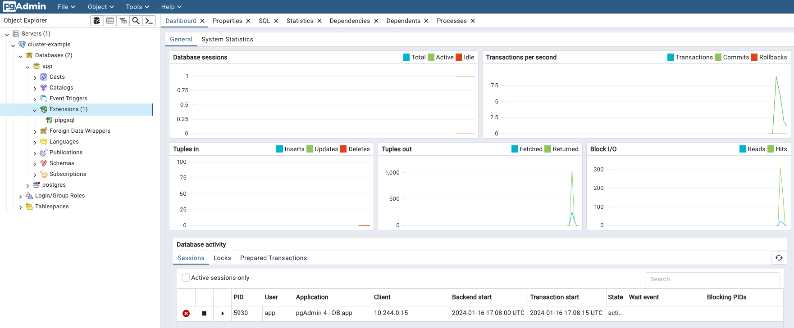

Kubectl Plugin
CloudNativePG provides a plugin for kubectl to manage a cluster in Kubernetes.
Install
You can install the cnpg plugin using a variety of methods.
Note
For air-gapped systems, installation via package managers, using previously downloaded files, may be a good option.
Via the installation script
curl -sSfL \
https://github.com/cloudnative-pg/cloudnative-pg/raw/main/hack/install-cnpg-plugin.sh | \
sudo sh -s -- -b /usr/local/bin
Using the Debian or RedHat packages
In the releases section of the GitHub repository, you can navigate to any release of interest (pick the same or newer release than your CloudNativePG operator), and in it you will find an Assets section. In that section are pre-built packages for a variety of systems. As a result, you can follow standard practices and instructions to install them in your systems.
Debian packages
For example, let's install the 1.22.2 release of the plugin, for an Intel based
64 bit server. First, we download the right .deb file.
$ wget https://github.com/cloudnative-pg/cloudnative-pg/releases/download/v1.22.1/kubectl-cnpg_1.22.2_linux_x86_64.deb
Then, install from the local file using dpkg:
$ dpkg -i kubectl-cnpg_1.22.2_linux_x86_64.deb
(Reading database ... 702524 files and directories currently installed.)
Preparing to unpack kubectl-cnpg_1.22.2_linux_x86_64.deb ...
Unpacking cnpg (1.22.2) over (1.22.2) ...
Setting up cnpg (1.22.2) ..
RPM packages
As in the example for .deb packages, let's install the 1.22.2 release for an
Intel 64 bit machine. Note the --output flag to provide a file name.
curl -L https://github.com/cloudnative-pg/cloudnative-pg/releases/download/v1.22.2/kubectl-cnpg_1.22.2_linux_x86_64.rpm \
--output kube-plugin.rpm
Then install with yum, and you're ready to use:
$ yum --disablerepo=* localinstall kube-plugin.rpm
yum --disablerepo=* localinstall kube-plugin.rpm
Failed to set locale, defaulting to C.UTF-8
Dependencies resolved.
====================================================================================================
Package Architecture Version Repository Size
====================================================================================================
Installing:
cnpg x86_64 1.22.2-1 @commandline 17 M
Transaction Summary
====================================================================================================
Install 1 Package
Total size: 14 M
Installed size: 43 M
Is this ok [y/N]: y
Using Krew
If you already have Krew installed, you can simply run:
kubectl krew install cnpg
When a new version of the plugin is released, you can update the existing installation with:
kubectl krew update
kubectl krew upgrade cnpg
Using Homebrew
Note
Please note that the Homebrew community manages the availability of the kubectl-cnpg plugin on Homebrew.
If you already have Homebrew installed, you can simply run:
brew install kubectl-cnpg
When a new version of the plugin is released, you can update the existing installation with:
brew update
brew upgrade kubectl-cnpg
Note
Auto-completion for the kubectl plugin is already managed by Homebrew.
There's no need to create the kubectl_complete-cnpg script mentioned below.
Supported Architectures
CloudNativePG Plugin is currently built for the following operating system and architectures:
- Linux
- amd64
- arm 5/6/7
- arm64
- s390x
- ppc64le
- macOS
- amd64
- arm64
- Windows
- 386
- amd64
- arm 5/6/7
- arm64
Configuring auto-completion
To configure auto-completion for the plugin, a helper shell script needs to be
installed into your current PATH. Assuming the latter contains /usr/local/bin,
this can be done with the following commands:
cat > kubectl_complete-cnpg <<EOF
#!/usr/bin/env sh
# Call the __complete command passing it all arguments
kubectl cnpg __complete "\$@"
EOF
chmod +x kubectl_complete-cnpg
# Important: the following command may require superuser permission
sudo mv kubectl_complete-cnpg /usr/local/bin
Important
The name of the script needs to be exactly the one provided since is used by the kubectl auto-complete process
Use
Once the plugin was installed and deployed, you can start using it like this:
kubectl cnpg <command> <args...>
Note
The plugin automatically detects if the standard output channel is connected to a terminal.
In such cases, it may add ANSI colors to the command output. To disable colors, use the
--color=never option with the command.
Generation of installation manifests
The cnpg plugin can be used to generate the YAML manifest for the
installation of the operator. This option would typically be used if you want
to override some default configurations such as number of replicas,
installation namespace, namespaces to watch, and so on.
For details and available options, run:
kubectl cnpg install generate --help
The main options are:
-n: the namespace in which to install the operator (by default:cnpg-system)--replicas: number of replicas in the deployment--version: minor version of the operator to be installed, such as1.17. If a minor version is specified, the plugin will install the latest patch version of that minor version. If no version is supplied the plugin will install the latestMAJOR.MINOR.PATCHversion of the operator.--watch-namespace: comma separated string containing the namespaces to watch (by default all namespaces)
An example of the generate command, which will generate a YAML manifest that
will install the operator, is as follows:
kubectl cnpg install generate \
-n king \
--version 1.17 \
--replicas 3 \
--watch-namespace "albert, bb, freddie" \
> operator.yaml
The flags in the above command have the following meaning:
- -n king install the CNPG operator into the king namespace
- --version 1.17 install the latest patch version for minor version 1.17
- --replicas 3 install the operator with 3 replicas
- --watch-namespace "albert, bb, freddie" have the operator watch for
changes in the albert, bb and freddie namespaces only
Status
The status command provides an overview of the current status of your
cluster, including:
- general information: name of the cluster, PostgreSQL's system ID, number of instances, current timeline and position in the WAL
- backup: point of recoverability, and WAL archiving status as returned by
the
pg_stat_archiverview from the primary - or designated primary in the case of a replica cluster - streaming replication: information taken directly from the
pg_stat_replicationview on the primary instance - instances: information about each Postgres instance, taken directly by each
instance manager; in the case of a standby, the
Current LSNfield corresponds to the latest write-ahead log location that has been replayed during recovery (replay LSN).
Important
The status information above is taken at different times and at different
locations, resulting in slightly inconsistent returned values. For example,
the Current Write LSN location in the main header, might be different
from the Current LSN field in the instances status as it is taken at
two different time intervals.
kubectl cnpg status sandbox
Cluster in healthy state
Name: sandbox
Namespace: default
System ID: 7039966298120953877
PostgreSQL Image: ghcr.io/cloudnative-pg/postgresql:16.3
Primary instance: sandbox-2
Instances: 3
Ready instances: 3
Current Write LSN: 3AF/EAFA6168 (Timeline: 8 - WAL File: 00000008000003AF00000075)
Continuous Backup status
First Point of Recoverability: Not Available
Working WAL archiving: OK
Last Archived WAL: 00000008000003AE00000079 @ 2021-12-14T10:16:29.340047Z
Last Failed WAL: -
Certificates Status
Certificate Name Expiration Date Days Left Until Expiration
---------------- --------------- --------------------------
cluster-example-ca 2022-05-05 15:02:42 +0000 UTC 87.23
cluster-example-replication 2022-05-05 15:02:42 +0000 UTC 87.23
cluster-example-server 2022-05-05 15:02:42 +0000 UTC 87.23
Streaming Replication status
Name Sent LSN Write LSN Flush LSN Replay LSN Write Lag Flush Lag Replay Lag State Sync State Sync Priority
---- -------- --------- --------- ---------- --------- --------- ---------- ----- ---------- -------------
sandbox-1 3AF/EB0524F0 3AF/EB011760 3AF/EAFEDE50 3AF/EAFEDE50 00:00:00.004461 00:00:00.007901 00:00:00.007901 streaming quorum 1
sandbox-3 3AF/EB0524F0 3AF/EB030B00 3AF/EB030B00 3AF/EB011760 00:00:00.000977 00:00:00.004194 00:00:00.008252 streaming quorum 1
Instances status
Name Database Size Current LSN Replication role Status QoS Manager Version
---- ------------- ----------- ---------------- ------ --- ---------------
sandbox-1 302 GB 3AF/E9FFFFE0 Standby (sync) OK Guaranteed 1.11.0
sandbox-2 302 GB 3AF/EAFA6168 Primary OK Guaranteed 1.11.0
sandbox-3 302 GB 3AF/EBAD5D18 Standby (sync) OK Guaranteed 1.11.0
You can also get a more verbose version of the status by adding
--verbose or just -v
kubectl cnpg status sandbox --verbose
Cluster in healthy state
Name: sandbox
Namespace: default
System ID: 7039966298120953877
PostgreSQL Image: ghcr.io/cloudnative-pg/postgresql:16.3
Primary instance: sandbox-2
Instances: 3
Ready instances: 3
Current Write LSN: 3B1/61DE3158 (Timeline: 8 - WAL File: 00000008000003B100000030)
PostgreSQL Configuration
archive_command = '/controller/manager wal-archive --log-destination /controller/log/postgres.json %p'
archive_mode = 'on'
archive_timeout = '5min'
checkpoint_completion_target = '0.9'
checkpoint_timeout = '900s'
cluster_name = 'sandbox'
dynamic_shared_memory_type = 'sysv'
full_page_writes = 'on'
hot_standby = 'true'
jit = 'on'
listen_addresses = '*'
log_autovacuum_min_duration = '1s'
log_checkpoints = 'on'
log_destination = 'csvlog'
log_directory = '/controller/log'
log_filename = 'postgres'
log_lock_waits = 'on'
log_min_duration_statement = '1000'
log_rotation_age = '0'
log_rotation_size = '0'
log_statement = 'ddl'
log_temp_files = '1024'
log_truncate_on_rotation = 'false'
logging_collector = 'on'
maintenance_work_mem = '2GB'
max_connections = '1000'
max_parallel_workers = '32'
max_replication_slots = '32'
max_wal_size = '15GB'
max_worker_processes = '32'
pg_stat_statements.max = '10000'
pg_stat_statements.track = 'all'
port = '5432'
shared_buffers = '16GB'
shared_memory_type = 'sysv'
shared_preload_libraries = 'pg_stat_statements'
ssl = 'on'
ssl_ca_file = '/controller/certificates/client-ca.crt'
ssl_cert_file = '/controller/certificates/server.crt'
ssl_key_file = '/controller/certificates/server.key'
synchronous_standby_names = 'ANY 1 ("sandbox-1","sandbox-3")'
unix_socket_directories = '/controller/run'
wal_keep_size = '512MB'
wal_level = 'logical'
wal_log_hints = 'on'
cnpg.config_sha256 = '3cfa683e23fe513afaee7c97b50ce0628e0cc634bca8b096517538a9a4428efc'
PostgreSQL HBA Rules
# Grant local access
local all all peer map=local
# Require client certificate authentication for the streaming_replica user
hostssl postgres streaming_replica all cert
hostssl replication streaming_replica all cert
hostssl all cnpg_pooler_pgbouncer all cert
# Otherwise use the default authentication method
host all all all scram-sha-256
Continuous Backup status
First Point of Recoverability: Not Available
Working WAL archiving: OK
Last Archived WAL: 00000008000003B00000001D @ 2021-12-14T10:20:42.272815Z
Last Failed WAL: -
Streaming Replication status
Name Sent LSN Write LSN Flush LSN Replay LSN Write Lag Flush Lag Replay Lag State Sync State Sync Priority
---- -------- --------- --------- ---------- --------- --------- ---------- ----- ---------- -------------
sandbox-1 3B1/61E26448 3B1/61DF82F0 3B1/61DF82F0 3B1/61DF82F0 00:00:00.000333 00:00:00.000333 00:00:00.005484 streaming quorum 1
sandbox-3 3B1/61E26448 3B1/61E26448 3B1/61DF82F0 3B1/61DF82F0 00:00:00.000756 00:00:00.000756 00:00:00.000756 streaming quorum 1
Instances status
Name Database Size Current LSN Replication role Status QoS Manager Version
---- ------------- ----------- ---------------- ------ --- ---------------
sandbox-1 3B1/610204B8 Standby (sync) OK Guaranteed 1.11.0
sandbox-2 3B1/61DE3158 Primary OK Guaranteed 1.11.0
sandbox-3 3B1/62618470 Standby (sync) OK Guaranteed 1.11.0
The command also supports output in yaml and json format.
Promote
The meaning of this command is to promote a pod in the cluster to primary, so you
can start with maintenance work or test a switch-over situation in your cluster
kubectl cnpg promote cluster-example cluster-example-2
Or you can use the instance node number to promote
kubectl cnpg promote cluster-example 2
Certificates
Clusters created using the CloudNativePG operator work with a CA to sign a TLS authentication certificate.
To get a certificate, you need to provide a name for the secret to store the credentials, the cluster name, and a user for this certificate
kubectl cnpg certificate cluster-cert --cnpg-cluster cluster-example --cnpg-user appuser
After the secret it's created, you can get it using kubectl
kubectl get secret cluster-cert
And the content of the same in plain text using the following commands:
kubectl get secret cluster-cert -o json | jq -r '.data | map(@base64d) | .[]'
Restart
The kubectl cnpg restart command can be used in two cases:
-
requesting the operator to orchestrate a rollout restart for a certain cluster. This is useful to apply configuration changes to cluster dependent objects, such as ConfigMaps containing custom monitoring queries.
-
request a single instance restart, either in-place if the instance is the cluster's primary or deleting and recreating the pod if it is a replica.
# this command will restart a whole cluster in a rollout fashion
kubectl cnpg restart [clusterName]
# this command will restart a single instance, according to the policy above
kubectl cnpg restart [clusterName] [pod]
If the in-place restart is requested but the change cannot be applied without a switchover, the switchover will take precedence over the in-place restart. A common case for this will be a minor upgrade of PostgreSQL image.
Note
If you want ConfigMaps and Secrets to be automatically reloaded
by instances, you can add a label with key cnpg.io/reload to it.
Reload
The kubectl cnpg reload command requests the operator to trigger a reconciliation
loop for a certain cluster. This is useful to apply configuration changes
to cluster dependent objects, such as ConfigMaps containing custom monitoring queries.
The following command will reload all configurations for a given cluster:
kubectl cnpg reload [cluster_name]
Maintenance
The kubectl cnpg maintenance command helps to modify one or more clusters
across namespaces and set the maintenance window values, it will change
the following fields:
- .spec.nodeMaintenanceWindow.inProgress
- .spec.nodeMaintenanceWindow.reusePVC
Accepts as argument set and unset using this to set the
inProgress to true in case setand to false in case of unset.
By default, reusePVC is always set to false unless the --reusePVC flag is passed.
The plugin will ask for a confirmation with a list of the cluster to modify and their new values, if this is accepted this action will be applied to all the cluster in the list.
If you want to set in maintenance all the PostgreSQL in your Kubernetes cluster, just need to write the following command:
kubectl cnpg maintenance set --all-namespaces
And you'll have the list of all the cluster to update
The following are the new values for the clusters
Namespace Cluster Name Maintenance reusePVC
--------- ------------ ----------- --------
default cluster-example true false
default pg-backup true false
test cluster-example true false
Do you want to proceed? [y/n]: y
Report
The kubectl cnpg report command bundles various pieces
of information into a ZIP file.
It aims to provide the needed context to debug problems
with clusters in production.
It has two sub-commands: operator and cluster.
report Operator
The operator sub-command requests the operator to provide information
regarding the operator deployment, configuration and events.
Important
All confidential information in Secrets and ConfigMaps is REDACTED.
The Data map will show the keys but the values will be empty.
The flag -S / --stopRedaction will defeat the redaction and show the
values. Use only at your own risk, this will share private data.
Note
By default, operator logs are not collected, but you can enable operator
log collection with the --logs flag
- deployment information: the operator Deployment and operator Pod
- configuration: the Secrets and ConfigMaps in the operator namespace
- events: the Events in the operator namespace
- webhook configuration: the mutating and validating webhook configurations
- webhook service: the webhook service
- logs: logs for the operator Pod (optional, off by default) in JSON-lines format
The command will generate a ZIP file containing various manifest in YAML format
(by default, but settable to JSON with the -o flag).
Use the -f flag to name a result file explicitly. If the -f flag is not used, a
default time-stamped filename is created for the zip file.
Note
The report plugin obeys kubectl conventions, and will look for objects constrained
by namespace. The CNPG Operator will generally not be installed in the same
namespace as the clusters.
E.g. the default installation namespace is cnpg-system
kubectl cnpg report operator -n <namespace>
results in
Successfully written report to "report_operator_<TIMESTAMP>.zip" (format: "yaml")
With the -f flag set:
kubectl cnpg report operator -n <namespace> -f reportRedacted.zip
Unzipping the file will produce a time-stamped top-level folder to keep the directory tidy:
unzip reportRedacted.zip
will result in:
Archive: reportRedacted.zip
creating: report_operator_<TIMESTAMP>/
creating: report_operator_<TIMESTAMP>/manifests/
inflating: report_operator_<TIMESTAMP>/manifests/deployment.yaml
inflating: report_operator_<TIMESTAMP>/manifests/operator-pod.yaml
inflating: report_operator_<TIMESTAMP>/manifests/events.yaml
inflating: report_operator_<TIMESTAMP>/manifests/validating-webhook-configuration.yaml
inflating: report_operator_<TIMESTAMP>/manifests/mutating-webhook-configuration.yaml
inflating: report_operator_<TIMESTAMP>/manifests/webhook-service.yaml
inflating: report_operator_<TIMESTAMP>/manifests/cnpg-ca-secret.yaml
inflating: report_operator_<TIMESTAMP>/manifests/cnpg-webhook-cert.yaml
If you activated the --logs option, you'd see an extra subdirectory:
Archive: report_operator_<TIMESTAMP>.zip
<snipped …>
creating: report_operator_<TIMESTAMP>/operator-logs/
inflating: report_operator_<TIMESTAMP>/operator-logs/cnpg-controller-manager-66fb98dbc5-pxkmh-logs.jsonl
Note
The plugin will try to get the PREVIOUS operator's logs, which is helpful when investigating restarted operators. In all cases, it will also try to get the CURRENT operator logs. If current and previous logs are available, it will show them both.
====== Begin of Previous Log =====
2023-03-28T12:56:41.251711811Z {"level":"info","ts":"2023-03-28T12:56:41Z","logger":"setup","msg":"Starting CloudNativePG Operator","version":"1.19.1","build":{"Version":"1.19.0+dev107","Commit":"cc9bab17","Date":"2023-03-28"}}
2023-03-28T12:56:41.251851909Z {"level":"info","ts":"2023-03-28T12:56:41Z","logger":"setup","msg":"Starting pprof HTTP server","addr":"0.0.0.0:6060"}
<snipped …>
====== End of Previous Log =====
2023-03-28T12:57:09.854306024Z {"level":"info","ts":"2023-03-28T12:57:09Z","logger":"setup","msg":"Starting CloudNativePG Operator","version":"1.19.1","build":{"Version":"1.19.0+dev107","Commit":"cc9bab17","Date":"2023-03-28"}}
2023-03-28T12:57:09.854363943Z {"level":"info","ts":"2023-03-28T12:57:09Z","logger":"setup","msg":"Starting pprof HTTP server","addr":"0.0.0.0:6060"}
If the operator hasn't been restarted, you'll still see the ====== Begin …
and ====== End … guards, with no content inside.
You can verify that the confidential information is REDACTED by default:
cd report_operator_<TIMESTAMP>/manifests/
head cnpg-ca-secret.yaml
data:
ca.crt: ""
ca.key: ""
metadata:
creationTimestamp: "2022-03-22T10:42:28Z"
managedFields:
- apiVersion: v1
fieldsType: FieldsV1
fieldsV1:
With the -S (--stopRedaction) option activated, secrets are shown:
kubectl cnpg report operator -n <namespace> -f reportNonRedacted.zip -S
You'll get a reminder that you're about to view confidential information:
WARNING: secret Redaction is OFF. Use it with caution
Successfully written report to "reportNonRedacted.zip" (format: "yaml")
unzip reportNonRedacted.zip
head cnpg-ca-secret.yaml
data:
ca.crt: LS0tLS1CRUdJTiBD…
ca.key: LS0tLS1CRUdJTiBF…
metadata:
creationTimestamp: "2022-03-22T10:42:28Z"
managedFields:
- apiVersion: v1
fieldsType: FieldsV1
report Cluster
The cluster sub-command gathers the following:
- cluster resources: the cluster information, same as
kubectl get cluster -o yaml - cluster pods: pods in the cluster namespace matching the cluster name
- cluster jobs: jobs, if any, in the cluster namespace matching the cluster name
- events: events in the cluster namespace
- pod logs: logs for the cluster Pods (optional, off by default) in JSON-lines format
- job logs: logs for the Pods created by jobs (optional, off by default) in JSON-lines format
The cluster sub-command accepts the -f and -o flags, as the operator does.
If the -f flag is not used, a default timestamped report name will be used.
Note that the cluster information does not contain configuration Secrets / ConfigMaps,
so the -S is disabled.
Note
By default, cluster logs are not collected, but you can enable cluster
log collection with the --logs flag
Usage:
kubectl cnpg report cluster <clusterName> [flags]
Note that, unlike the operator sub-command, for the cluster sub-command you
need to provide the cluster name, and very likely the namespace, unless the cluster
is in the default one.
kubectl cnpg report cluster example -f report.zip -n example_namespace
and then:
unzip report.zip
Archive: report.zip
creating: report_cluster_example_<TIMESTAMP>/
creating: report_cluster_example_<TIMESTAMP>/manifests/
inflating: report_cluster_example_<TIMESTAMP>/manifests/cluster.yaml
inflating: report_cluster_example_<TIMESTAMP>/manifests/cluster-pods.yaml
inflating: report_cluster_example_<TIMESTAMP>/manifests/cluster-jobs.yaml
inflating: report_cluster_example_<TIMESTAMP>/manifests/events.yaml
Remember that you can use the --logs flag to add the pod and job logs to the ZIP.
kubectl cnpg report cluster example -n example_namespace --logs
will result in:
Successfully written report to "report_cluster_example_<TIMESTAMP>.zip" (format: "yaml")
unzip report_cluster_<TIMESTAMP>.zip
Archive: report_cluster_example_<TIMESTAMP>.zip
creating: report_cluster_example_<TIMESTAMP>/
creating: report_cluster_example_<TIMESTAMP>/manifests/
inflating: report_cluster_example_<TIMESTAMP>/manifests/cluster.yaml
inflating: report_cluster_example_<TIMESTAMP>/manifests/cluster-pods.yaml
inflating: report_cluster_example_<TIMESTAMP>/manifests/cluster-jobs.yaml
inflating: report_cluster_example_<TIMESTAMP>/manifests/events.yaml
creating: report_cluster_example_<TIMESTAMP>/logs/
inflating: report_cluster_example_<TIMESTAMP>/logs/cluster-example-full-1.jsonl
creating: report_cluster_example_<TIMESTAMP>/job-logs/
inflating: report_cluster_example_<TIMESTAMP>/job-logs/cluster-example-full-1-initdb-qnnvw.jsonl
inflating: report_cluster_example_<TIMESTAMP>/job-logs/cluster-example-full-2-join-tvj8r.jsonl
Logs
The kubectl cnpg logs command allows to follow the logs of a collection
of pods related to CloudNativePG in a single go.
It has at the moment one available sub-command: cluster.
Cluster logs
The cluster sub-command gathers all the pod logs for a cluster in a single
stream or file.
This means that you can get all the pod logs in a single terminal window, with a
single invocation of the command.
As in all the cnpg plugin sub-commands, you can get instructions and help with
the -h flag:
kubectl cnpg logs cluster -h
The logs command will display logs in JSON-lines format, unless the
--timestamps flag is used, in which case, a human readable timestamp will be
prepended to each line. In this case, lines will no longer be valid JSON,
and tools such as jq may not work as desired.
If the logs cluster sub-command is given the -f flag (aka --follow), it
will follow the cluster pod logs, and will also watch for any new pods created
in the cluster after the command has been invoked.
Any new pods found, including pods that have been restarted or re-created,
will also have their pods followed.
The logs will be displayed in the terminal's standard-out.
This command will only exit when the cluster has no more pods left, or when it
is interrupted by the user.
If logs is called without the -f option, it will read the logs from all
cluster pods until the time of invocation and display them in the terminal's
standard-out, then exit.
The -o or --output flag can be provided, to specify the name
of the file where the logs should be saved, instead of displaying over
standard-out.
The --tail flag can be used to specify how many log lines will be retrieved
from each pod in the cluster. By default, the logs cluster sub-command will
display all the logs from each pod in the cluster. If combined with the "follow"
flag -f, the number of logs specified by --tail will be retrieved until the
current time, and and from then the new logs will be followed.
NOTE: unlike other cnpg plugin commands, the -f is used to denote "follow"
rather than specify a file. This keeps with the convention of kubectl logs,
which takes -f to mean the logs should be followed.
Usage:
kubectl cnpg logs cluster <clusterName> [flags]
Using the -f option to follow:
kubectl cnpg report cluster cluster-example -f
Using --tail option to display 3 lines from each pod and the -f option
to follow:
kubectl cnpg report cluster cluster-example -f --tail 3
{"level":"info","ts":"2023-06-30T13:37:33Z","logger":"postgres","msg":"2023-06-30 13:37:33.142 UTC [26] LOG: ending log output to stderr","source":"/controller/log/postgres","logging_pod":"cluster-example-3"}
{"level":"info","ts":"2023-06-30T13:37:33Z","logger":"postgres","msg":"2023-06-30 13:37:33.142 UTC [26] HINT: Future log output will go to log destination \"csvlog\".","source":"/controller/log/postgres","logging_pod":"cluster-example-3"}
…
…
With the -o option omitted, and with --output specified:
kubectl cnpg logs cluster cluster-example --output my-cluster.log
Successfully written logs to "my-cluster.log"
Destroy
The kubectl cnpg destroy command helps remove an instance and all the
associated PVCs from a Kubernetes cluster.
The optional --keep-pvc flag, if specified, allows you to keep the PVCs,
while removing all metadata.ownerReferences that were set by the instance.
Additionally, the cnpg.io/pvcStatus label on the PVCs will change from
ready to detached to signify that they are no longer in use.
Running again the command without the --keep-pvc flag will remove the
detached PVCs.
Usage:
kubectl cnpg destroy [CLUSTER_NAME] [INSTANCE_ID]
The following example removes the cluster-example-2 pod and the associated
PVCs:
kubectl cnpg destroy cluster-example 2
Cluster hibernation
Sometimes you may want to suspend the execution of a CloudNativePG Cluster
while retaining its data, then resume its activity at a later time. We've
called this feature cluster hibernation.
Hibernation is only available via the kubectl cnpg hibernate [on|off]
commands.
Hibernating a CloudNativePG cluster means destroying all the resources generated by the cluster, except the PVCs that belong to the PostgreSQL primary instance.
You can hibernate a cluster with:
kubectl cnpg hibernate on <cluster-name>
This will:
- shutdown every PostgreSQL instance
- detach the PVCs containing the data of the primary instance, and annotate them with the latest database status and the latest cluster configuration
- delete the
Clusterresource, including every generated resource - except the aforementioned PVCs
When hibernated, a CloudNativePG cluster is represented by just a group of
PVCs, in which the one containing the PGDATA is annotated with the latest
available status, including content from pg_controldata.
Warning
A cluster having fenced instances cannot be hibernated, as fencing is part of the hibernation procedure too.
In case of error the operator will not be able to revert the procedure. You can still force the operation with:
kubectl cnpg hibernate on cluster-example --force
A hibernated cluster can be resumed with:
kubectl cnpg hibernate off <cluster-name>
Once the cluster has been hibernated, it's possible to show the last configuration and the status that PostgreSQL had after it was shut down. That can be done with:
kubectl cnpg hibernate status <cluster-name>
Benchmarking the database with pgbench
Pgbench can be run against an existing PostgreSQL cluster with following command:
kubectl cnpg pgbench <cluster-name> -- --time 30 --client 1 --jobs 1
Refer to the Benchmarking pgbench section for more details.
Benchmarking the storage with fio
fio can be run on an existing storage class with following command:
kubectl cnpg fio <fio-job-name> -n <namespace>
Refer to the Benchmarking fio section for more details.
Requesting a new physical backup
The kubectl cnpg backup command requests a new physical backup for
an existing Postgres cluster by creating a new Backup resource.
Info
From release 1.21, the backup command accepts a new flag, -m
to specify the backup method.
To request a backup using volume snapshots, set -m volumeSnapshot
The following example requests an on-demand backup for a given cluster:
kubectl cnpg backup [cluster_name]
or, if using volume snapshots (from release 1.21)
kubectl cnpg backup [cluster_name] -m volumeSnapshot
The created backup will be named after the request time:
kubectl cnpg backup cluster-example
backup/cluster-example-20230121002300 created
By default, a newly created backup will use the backup target policy defined
in the cluster to choose which instance to run on.
However, you can override this policy with the --backup-target option.
In the case of volume snapshot backups, you can also use the --online option
to request an online/hot backup or an offline/cold one: additionally, you can
also tune online backups by explicitly setting the --immediate-checkpoint and
--wait-for-archive options.
The "Backup" section contains more information about the configuration settings.
Launching psql
The kubectl cnpg psql command starts a new PostgreSQL interactive front-end
process (psql) connected to an existing Postgres cluster, as if you were running
it from the actual pod. This means that you will be using the postgres user.
Important
As you will be connecting as postgres user, in production environments this
method should be used with extreme care, by authorized personnel only.
kubectl cnpg psql cluster-example
psql (16.3 (Debian 16.3-1.pgdg110+1))
Type "help" for help.
postgres=#
By default, the command will connect to the primary instance. The user can
select to work against a replica by using the --replica option:
kubectl cnpg psql --replica cluster-example
psql (16.3 (Debian 16.3-1.pgdg110+1))
Type "help" for help.
postgres=# select pg_is_in_recovery();
pg_is_in_recovery
-------------------
t
(1 row)
postgres=# \q
This command will start kubectl exec, and the kubectl executable must be
reachable in your PATH variable to correctly work.
Snapshotting a Postgres cluster
Warning
The kubectl cnpg snapshot command has been removed.
Please use the backup command to request
backups using volume snapshots.
Using pgAdmin4 for evaluation/demonstration purposes only
pgAdmin stands as the most popular and feature-rich open-source administration and development platform for PostgreSQL. For more information on the project, please refer to the official documentation.
Given that the pgAdmin Development Team maintains official Docker container images, you can install pgAdmin in your environment as a standard Kubernetes deployment.
Important
Deployment of pgAdmin in Kubernetes production environments is beyond the scope of this document and, more broadly, of the CloudNativePG project.
However, for the purposes of demonstration and evaluation, CloudNativePG
offers a suitable solution. The cnpg plugin implements the pgadmin4
command, providing a straightforward method to connect to a given database
Cluster and navigate its content in a local environment such as kind.
For example, you can install a demo deployment of pgAdmin4 for the
cluster-example cluster as follows:
kubectl cnpg pgadmin4 cluster-example
This command will produce:
ConfigMap/cluster-example-pgadmin4 created
Deployment/cluster-example-pgadmin4 created
Service/cluster-example-pgadmin4 created
Secret/cluster-example-pgadmin4 created
[...]
After deploying pgAdmin, forward the port using kubectl and connect through your browser by following the on-screen instructions.

As usual, you can use the --dry-run option to generate the YAML file:
kubectl cnpg pgadmin4 --dry-run cluster-example
pgAdmin4 can be installed in either desktop or server mode, with the default being server.
In server mode, authentication is required using a randomly generated password,
and users must manually specify the database to connect to.
On the other hand, desktop mode initiates a pgAdmin web interface without
requiring authentication. It automatically connects to the app database as the
app user, making it ideal for quick demos, such as on a local deployment using
kind:
kubectl cnpg pgadmin4 --mode desktop cluster-example
After concluding your demo, ensure the termination of the pgAdmin deployment by executing:
kubectl cnpg pgadmin4 --dry-run cluster-example | kubectl delete -f -
Warning
Never deploy pgAdmin in production using the plugin.
Logical Replication Publications
The cnpg publication command group is designed to streamline the creation and
removal of PostgreSQL logical replication publications.
Be aware that these commands are primarily intended for assisting in the
creation of logical replication publications, particularly on remote PostgreSQL
databases.
Warning
It is crucial to have a solid understanding of both the capabilities and limitations of PostgreSQL's native logical replication system before using these commands. In particular, be mindful of the logical replication restrictions.
Creating a new publication
To create a logical replication publication, use the cnpg publication create
command. The basic structure of this command is as follows:
kubectl cnpg publication create \
--publication <PUBLICATION_NAME> \
[--external-cluster <EXTERNAL_CLUSTER>]
<LOCAL_CLUSTER> [options]
There are two primary use cases:
-
With
--external-cluster: Use this option to create a publication on an external cluster (i.e. defined in theexternalClustersstanza). The commands will be issued from the<LOCAL_CLUSTER>, but the publication will be for the data in<EXTERNAL_CLUSTER>. -
Without
--external-cluster: Use this option to create a publication in the<LOCAL_CLUSTER>PostgreSQLCluster(by default, theappdatabase).
Warning
When connecting to an external cluster, ensure that the specified user has
sufficient permissions to execute the CREATE PUBLICATION command.
You have several options, similar to the CREATE PUBLICATION
command, to define the group of tables to replicate. Notable options include:
- If you specify the
--all-tablesoption, you create a publicationFOR ALL TABLES. - Alternatively, you can specify multiple occurrences of:
--table: Add a specific table (with an expression) to the publication.--schema: Include all tables in the specified database schema (available from PostgreSQL 15).
The --dry-run option enables you to preview the SQL commands that the plugin
will execute.
For additional information and detailed instructions, type the following command:
kubectl cnpg publication create --help
Example
Given a source-cluster and a destination-cluster, we would like to create a
publication for the data on source-cluster.
The destination-cluster has an entry in the externalClusters stanza pointing
to source-cluster.
We can run:
kubectl cnpg publication create destination-cluster \
--external-cluster=source-cluster --all-tables
which will create a publication for all tables on source-cluster, running
the SQL commands on the destination-cluster.
Or instead, we can run:
kubectl cnpg publication create source-cluster \
--publication=app --all-tables
which will create a publication named app for all the tables in the
source-cluster, running the SQL commands on the source cluster.
Info
There are two sample files that have been provided for illustration and inspiration: logical-source and logical-destination.
Dropping a publication
The cnpg publication drop command seamlessly complements the create command
by offering similar key options, including the publication name, cluster name,
and an optional external cluster. You can drop a PUBLICATION with the
following command structure:
kubectl cnpg publication drop \
--publication <PUBLICATION_NAME> \
[--external-cluster <EXTERNAL_CLUSTER>]
<LOCAL_CLUSTER> [options]
To access further details and precise instructions, use the following command:
kubectl cnpg publication drop --help
Logical Replication Subscriptions
The cnpg subscription command group is a dedicated set of commands designed
to simplify the creation and removal of
PostgreSQL logical replication subscriptions.
These commands are specifically crafted to aid in the establishment of logical
replication subscriptions, especially when dealing with remote PostgreSQL
databases.
Warning
Before using these commands, it is essential to have a comprehensive understanding of both the capabilities and limitations of PostgreSQL's native logical replication system. In particular, be mindful of the logical replication restrictions.
In addition to subscription management, we provide a helpful command for synchronizing all sequences from the source cluster. While its applicability may vary, this command can be particularly useful in scenarios involving major upgrades or data import from remote servers.
Creating a new subscription
To create a logical replication subscription, use the cnpg subscription create
command. The basic structure of this command is as follows:
kubectl cnpg subscription create \
--subscription <SUBSCRIPTION_NAME> \
--publication <PUBLICATION_NAME> \
--external-cluster <EXTERNAL_CLUSTER> \
<LOCAL_CLUSTER> [options]
This command configures a subscription directed towards the specified
publication in the designated external cluster, as defined in the
externalClusters stanza of the <LOCAL_CLUSTER>.
For additional information and detailed instructions, type the following command:
kubectl cnpg subscription create --help
Example
As in the section on publications, we have a source-cluster and a
destination-cluster, and we have already created a publication called
app.
The following command:
kubectl cnpg subscription create destination-cluster \
--external-cluster=source-cluster \
--publication=app --subscription=app
will create a subscription for app on the destination cluster.
Warning
Prioritize testing subscriptions in a non-production environment to ensure their effectiveness and identify any potential issues before implementing them in a production setting.
Info
There are two sample files that have been provided for illustration and inspiration: logical-source and logical-destination.
Dropping a subscription
The cnpg subscription drop command seamlessly complements the create command.
You can drop a SUBSCRIPTION with the following command structure:
kubectl cnpg subcription drop \
--subscription <SUBSCRIPTION_NAME> \
<LOCAL_CLUSTER> [options]
To access further details and precise instructions, use the following command:
kubectl cnpg subscription drop --help
Synchronizing sequences
One notable constraint of PostgreSQL logical replication, implemented through publications and subscriptions, is the lack of sequence synchronization. This becomes particularly relevant when utilizing logical replication for live database migration, especially to a higher version of PostgreSQL. A crucial step in this process involves updating sequences before transitioning applications to the new database (cutover).
To address this limitation, the cnpg subscription sync-sequences command
offers a solution. This command establishes a connection with the source
database, retrieves all relevant sequences, and subsequently updates local
sequences with matching identities (based on database schema and sequence
name).
You can use the command as shown below:
kubectl cnpg subscription sync-sequences \
--subscription <SUBSCRIPTION_NAME> \
<LOCAL_CLUSTER>
For comprehensive details and specific instructions, utilize the following command:
kubectl cnpg subscription sync-sequences --help
Example
As in the previous sections for publication and subscription, we have
a source-cluster and a destination-cluster. The publication and the
subscription, both called app, are already present.
The following command will synchronize the sequences involved in the
app subscription, from the source cluster into the destination cluster.
kubectl cnpg subscription sync-sequences destination-cluster \
--subscription=app
Warning
Prioritize testing subscriptions in a non-production environment to guarantee their effectiveness and detect any potential issues before deploying them in a production setting.
Integration with K9s
The cnpg plugin can be easily integrated in K9s, a
popular terminal-based UI to interact with Kubernetes clusters.
See k9s/plugins.yml for details.